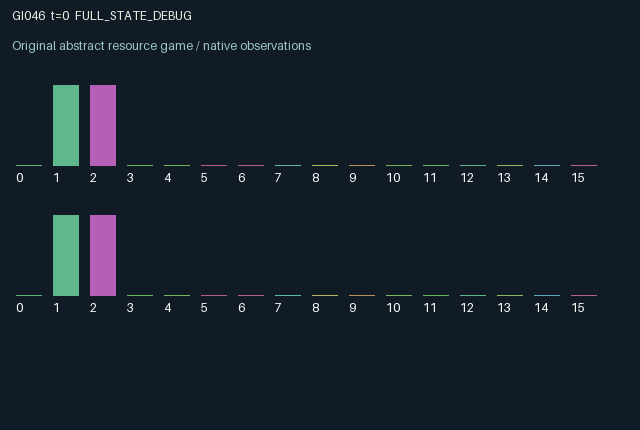

GI046 / LEGACY_ARRAY
astra-d2-00046: Reconfigurable packet loops with cross-role reception
2 agents5 actions16 observation columns32 original horizonRuntime: PASS
Release verification episode
Untrained uniform legal actions. Actual JAX state sampled along the full original episode; full-state debug camera. No human performance or learning claim.

Run this game
crucibles play --game 46
Start Python locally, then open the address printed by the terminal. Installation, multiplayer, takeover and keyboard controls →
Objective, rewards & ending
Exact task contract
{
"termination": "Original kernel t >= 32; see mechanism and source"
}Declared per-step reward bounds: -1.0 to 1.0. Observability: source_defined.
Rules
Original mechanism document (historical status wording retained)
# astra-d2-00046: Reconfigurable packet loops with cross-role reception Status: original parentless source proposal; not executed or isolated-validated by the author. There are four persistent transport nodes, two packet colors, and two role-controlled switches. Role 0 injects color 0 at node 0 and needs role 1 to receive it at node 2. Role 1 injects color 1 at node 2 and needs role 0 to receive it at node 0. Actions are wait, inject, flip the local switch, receive the other color at the local junction, and flush both colors at that junction. Stored local energy gates active actions. All five action indices remain legal, including ineffective unaffordable requests. Packets advance one edge per step. Node 1 always leads to node 2 and node 3 always leads to node 0. The switch at node 0 sends packets to node 1 or node 3; the switch at node 2 sends packets to node 3 or node 1. Switch changes become effective on the following transition. This can create local loops that retain a packet until reconfiguration. Reception operates on packets present before movement, so arriving packets cannot be received during the same transition. Colors share each node's capacity. Routed overflow is discarded proportionally across colors, then every transported quantity loses four percent. Flushing removes all colors at the local junction. Delivery removes only the opposite role's color, pays its owner, and supplies a smaller service benefit to the receiver. Both injection-induced congestion and destructive flushing can change the other role's future delivery opportunities. Loop selection, reciprocal receiving, packet aging, and shared capacity produce delays that persist beyond the immediate actions. Both roles see the full transport state. The 16 observation columns are time, own and other energy, own and other switch, all four nodes of the role's own color, all four nodes of the other color, own and other previous delivered quantities, and a bounded aggregate previous loss indicator. Node order stays absolute; rows orient packet color and switch ownership relative to the observer. Role 0's local junction is node 0; role 1's is node 2. Randomness chooses only the initial two switch settings from the explicit key. Reward is tanh of own delivery benefit, cross-delivery service benefit, and the negative energy-operation and own-packet-loss terms, so reward stays in [-1, 1]. The observation and queued packets after the 32nd transition are retained; packets still circulating at that point generate no later credit. The construction is related to queueing, switching networks, store-and-forward transport, and cooperative delivery. It proposes explicit action-controlled topology and color-coupled capacity with receiver-side completion. This description does not establish novelty against all programs, nonisomorphism, operational eligibility, compiler success, or learning effectiveness. No benchmark, parent source, or feedback outcome was accessed.
Commands
0Action 0; see mechanism and source
1Action 1; see mechanism and source
2Action 2; see mechanism and source
3Action 3; see mechanism and source
4Action 4; see mechanism and source
Roles & abilities
agent_0 Original legacy agent; see mechanism and source
agent_1 Original legacy agent; see mechanism and source
Observation permissions
Training receives only the original observation rows. Role cameras use declared visibility; debug cameras are explicitly marked. Local benchmark records log debug exposure and role takeover history.
Exact observation layout
[]
Entity visibility & attributes
[]
Actual verification & provenance
Per-game execution receipt
{
"game": "gi046",
"status": "PASS",
"verification_revision": 2,
"source_sha256": "f03f64575016821f306aa07e9a3ca7e012988852321d881c996aa0b31b1e8699",
"seed": 20261101,
"runtime": {
"jax": "0.4.38",
"numpy": "1.26.4",
"devices": [
"TFRT_CPU_0"
]
},
"dimensions": {
"num_agents": 2,
"observation_size": 16,
"num_actions": 5,
"max_steps": 32
},
"checks": {
"eager_reset": {
"status": "PASS",
"seconds": 0.3781862258911133
},
"observation_spaces_legal_masks": {
"status": "PASS",
"seconds": 0.12856626510620117
},
"eager_step": {
"status": "PASS",
"seconds": 0.8164753913879395
},
"jit_reset": {
"status": "PASS",
"seconds": 0.15297937393188477
},
"jit_step": {
"status": "PASS",
"seconds": 0.27416467666625977
},
"eager_jit_integer_parity_float_measurement": {
"status": "PASS",
"seconds": 0.0009999275207519531
},
"jit_vmap_reset": {
"status": "PASS",
"seconds": 0.2217090129852295
},
"jit_vmap_step": {
"status": "PASS",
"seconds": 0.3536806106567383
},
"outer_autoreset_api": {
"status": "PASS",
"seconds": 0.5258643627166748
},
"full_original_horizon_episode_and_render": {
"status": "PASS",
"seconds": 1.7005534172058105
}
},
"human_scores": null,
"browser_controls": "PENDING",
"failures": [],
"elapsed_seconds": 5.037974834442139,
"float_parity_max_abs": 0.0,
"numerical_parity": "EXACT",
"raw_terminal_absorbing": "NOT_PART_OF_ORIGINAL_LEGACY_CONTRACT",
"terminal_outer_reset": "PASS",
"episode_steps": 32,
"scripted_random_returns": [
-0.04118707776069641,
0.2841972603928298
],
"terminal": true,
"demo_information": "FULL_STATE_DEBUG",
"demo_frames": 33,
"render_roles_checked": 2
}Chromium control verification
{
"game": "gi046",
"status": "PASS",
"human_scores": null,
"engineering": true,
"checks": [
"catalog_selected_and_real_native_reset",
"dom_queue_and_native_step",
"second_participant_ownership_and_native_joint_step",
"all_roles_individually_controllable_no_role_cap",
"explicit_debug_camera",
"release_to_pure_ai_without_reset"
],
"seconds": 4.375134229660034
}Original identity and file hashes
{
"id": 46,
"key": "gi046",
"title": "astra-d2-00046: Reconfigurable packet loops with cross-role reception",
"summary": "",
"tags": [],
"family": "legacy_array",
"dimensions": {
"num_agents": 2,
"observation_size": 16,
"num_actions": 5,
"max_steps": 32
},
"source_sha256": "f03f64575016821f306aa07e9a3ca7e012988852321d881c996aa0b31b1e8699",
"manifest_sha256": "993b7f1f44d15412cd552738cbb80aa506b743badbfcb4290c05fa25dafc4af3",
"files": [
{
"file": "candidate.py",
"sha256": "f03f64575016821f306aa07e9a3ca7e012988852321d881c996aa0b31b1e8699",
"bytes": 3873,
"origin": "work/exp_2/astra_generation/discovery_v2/initial/candidate_00046/attempt_00/candidate.py"
},
{
"file": "mechanism.md",
"sha256": "f1b13e5ffe06b0a835642a4cf62872a91ea29ffb56412c921c7111ab58011e75",
"bytes": 2977,
"origin": "work/exp_2/astra_generation/discovery_v2/initial/candidate_00046/attempt_00/mechanism.md"
}
],
"original_status": "LEGACY_SOURCE",
"original_saved_replay": false,
"release_validation": "PASS",
"human_scores": null,
"browser_validation": "PASS"
}